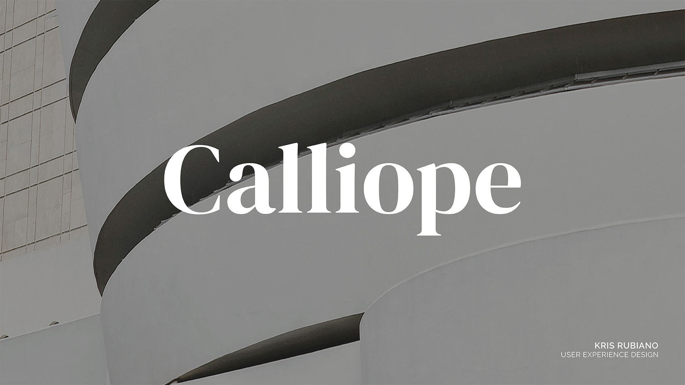
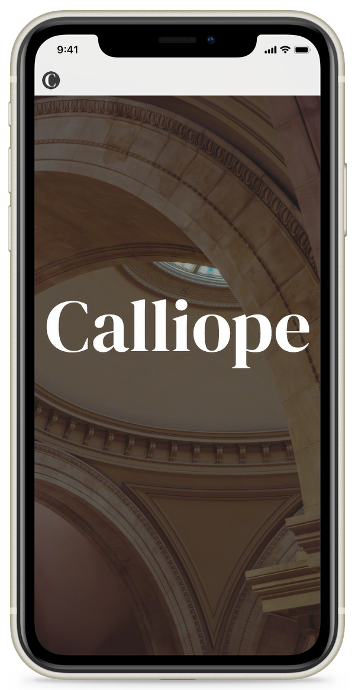
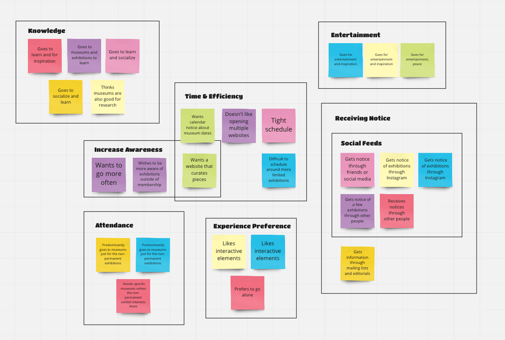
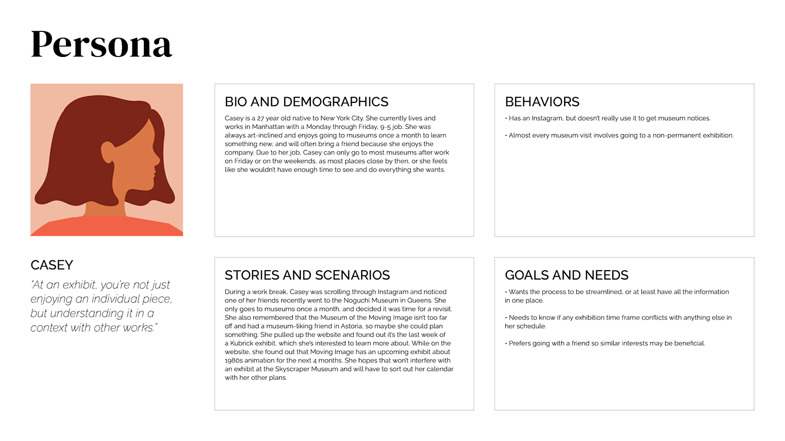
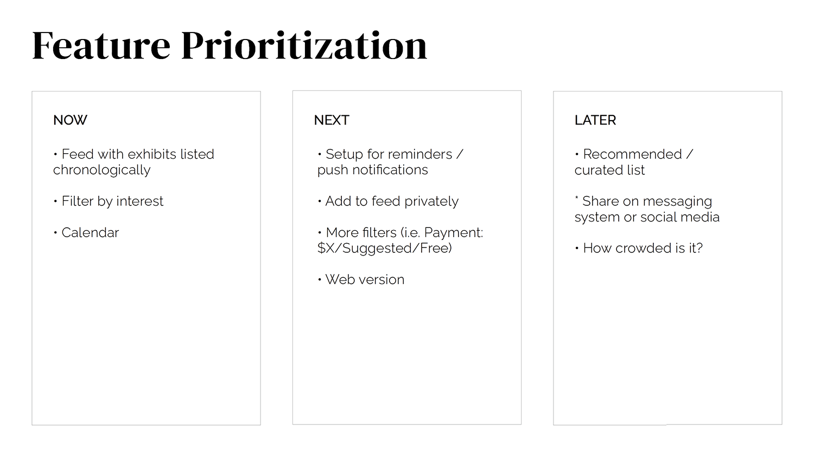
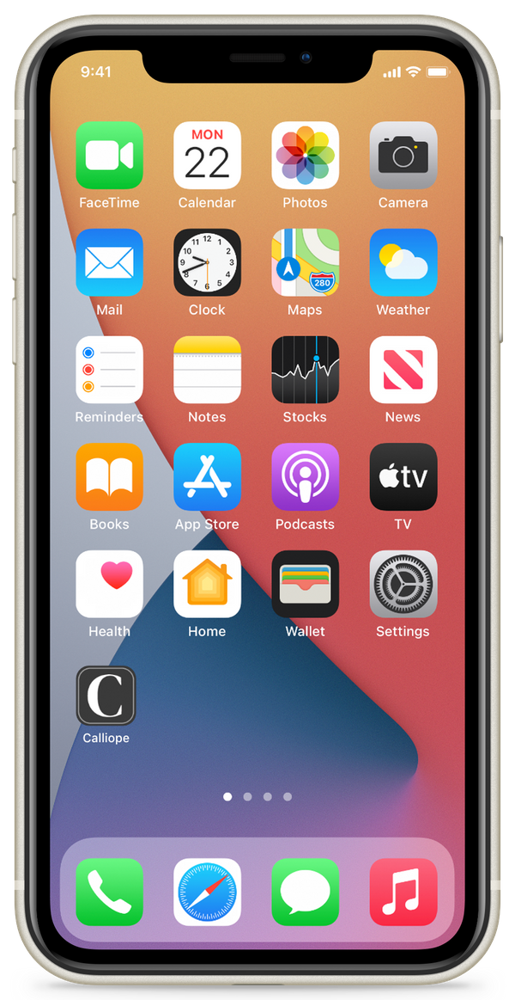
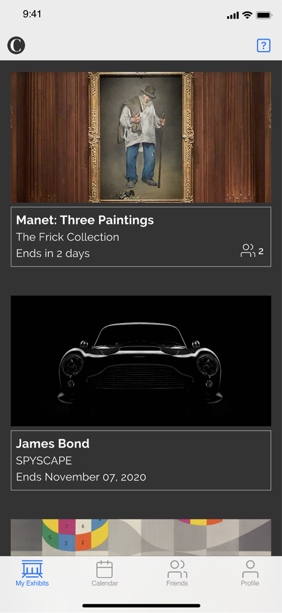

Calliope, a museum exhibition app

Museum goers of New York City need a calendar feed of exhibitions that interest them because they want to schedule more efficiently.
Research:
- Why do users go to museums?
- How much time did they spend at a museum? Why that amount of time?
- When it came to scheduled exhibitions, how did they find out about them? Exhibitions in the past, current, upcoming?
Methods:
- User Interviews: I conducted 7 interviews with New York City residents. A few of the research questions as seen above were asked.
- Affinity Mapping: Organized observations and patterns. 
- Persona: I created Casey, who works a full-time job and many of her museum visits were over the weekends due to time constraints. 
- Competitive Research: It was noted that none of the platforms had the ability to filter by interests very well.
Synthesis:
- User Flow
- Feature Prioritization 

Prototyping and Usability Testing:
I deviated from my paper prototype when creating the low fidelity wireframes as I realized that many of the users that I interviewed had iPhones. I then focused on making the app more intuitive for the iOS environment. And while I received positive comments on the design, a pain point was feedback on the search results page, which I revised in the prototype.

Click the images to the left
to view the Adobe XD prototype.
What's next?
- More usability testing for recent prototype.
- Refine and redesign the search feature, i.e. autofill function.
- Determine the features needed for the website version.
- More testing!